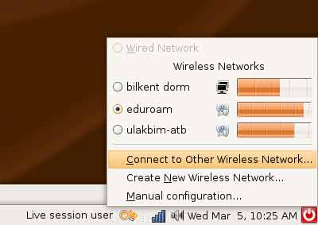

Adım 1
Network Manager uzerinden, Connect to Other Wireless Network secilir.

Adım3
Acilan menude, Network Name kismina eduroam yazilir, Wireless Security kisminda WPA2 Enterprise secilir.

Adım3
Yenilenen ekranda;
Network Name: eduroam
Wireless Security: WPA2 Enterprise
EAP Method: TTLS
Key Type: Dynamic WEP
Phase2 Type: PAP
Identity: kullanici adiniz
Password: sifreniz
Anonymous identity: anonymous@ulakbim.gov.tr
Client certificate file: None
CA Certificate file: None
Private key file: None
Private key password: Bos Birakiniz
Connect tusuna bastiginizda eduroam ağına baglanacaksınız.